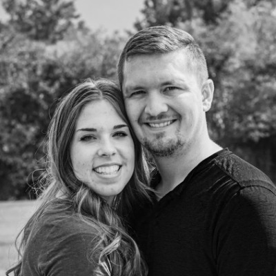

Shaelee's Biography
A little about me
Hey, my name is Shae!! I am currently based out of Idaho but look for adventure everywhere! I grew up in Canada, and yes, if you listen close you might just hear me say "eh". I served a mission on Temple Square in Salt Lake City, Utah for the Church of Jesus Christ of Latter-Day Saints and then choose to come back to the states for collage. I meet my husband in class and he has always encouraged me to follow my dreams, and he helps me make them a reality. My amazing husband encouraged me and even bought me a fancy camera, now I live my dream! I am a photographer! I am so grateful that my husband has been so supportive and encouraging as I have developed my skills and spent so much time learning and practicing.
I attended BYU-I and graduated with a degree in Professional Studies. I took 24 classes (a minor) that were dedicated to taking photos. I've learned so much, ranging from the simple "point and click" to correctly exposing a film camera.
This is more than a hobby to me; this profession creates happiness in my life and in the lives of those I take photos for. With years of experience, I am committed to capturing beautiful images of you and your loved ones! No matter what you need/want pictures for I will work to make you look amazing! I try to keep my photo shoots fun and professional. I can be your family photographer for every event from newborn pictures, high school seniors, engagements, weddings, and family pictures every year of the journey. Photos are such a great gift, they bring back memories and allow us to see loved ones after they are gone. I want to help you capture the milestones of life so that you and your family can remember them forever.
